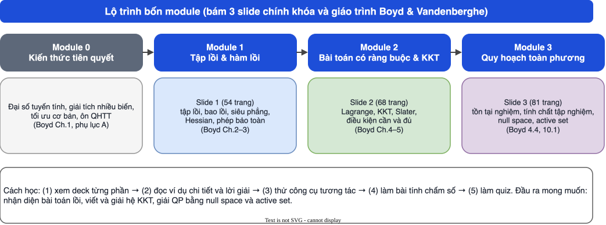

HỌC PHẦN CSE703057 · ĐẠI HỌC PHENIKAA
Tối ưu hóa phi tuyến và tối ưu lồi
Bộ bài giảng tự học 4 module, bám sát 3 slide chính khóa của ORLab (tập lồi và hàm lồi; bài toán có ràng buộc và KKT; quy hoạch toàn phương) và giáo trình Boyd & Vandenberghe. Mỗi module có deck slide, ví dụ có lời giải, công cụ tương tác, và ngân hàng câu hỏi có giải thích.
Kiến thức tiên quyết
Đại số tuyến tính, giải tích nhiều biến, ngôn ngữ tối ưu, ôn QHTT
Sắp có
Tập lồi và hàm lồi
Slide 1 (54 tr.): tập lồi, bao lồi, siêu phẳng, hàm lồi, Hessian
149 câu hỏi
Mở bài giảng →
Tối ưu có ràng buộc và điều kiện KKT
Slide 2 (68 tr.): Lagrange, KKT, Slater, điều kiện cần và đủ
Sắp có
Quy hoạch toàn phương
Slide 3 (81 tr.): tồn tại nghiệm, null space, tập hoạt động
Sắp có
Lộ trình

- Xem deck từng phần (phím ← →), mở “📖 Giải thích cho người mới” khi chưa rõ.
- Đọc “Ví dụ chi tiết” và tự làm lại trước khi xem lời giải.
- Thử các công cụ tương tác (Hessian, KKT, active set…).
- Làm ngân hàng câu hỏi: trắc nghiệm có giải thích ngay, điền số, tự luận có đáp án mẫu; có nút làm lại từng câu và làm lại toàn bộ.
Nội dung chính bám 3 slide trong thư mục Slides và đề cương chính thức. Các tài liệu Studocu (đề/bài tập giữa kỳ, giáo trình BTDOC) rất cũ và thuộc ngành khác, chỉ dùng để tham khảo, được gắn nhãn riêng; không suy ra cấu trúc đề thi thật. Khi kiểm chứng bằng code, một số chỗ trong slide chưa khớp — xem trang Kiểm chứng.